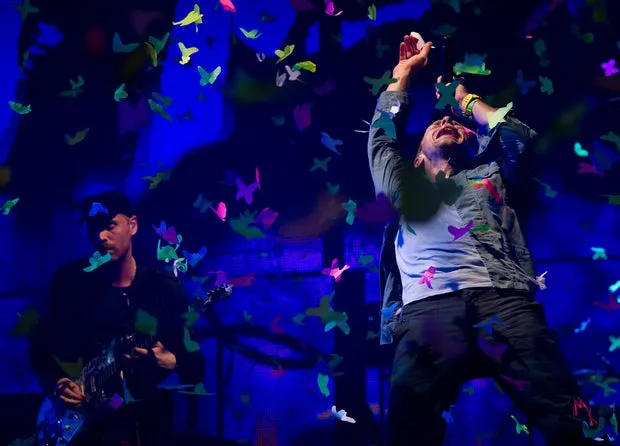

Coldplay
British rock band formed in London

About
Coldplay formed in London in 1996 and is known for melodic, emotional songs and spectacular live shows. The band has sold tens of millions of albums worldwide.
Their sound has moved from quiet piano-driven rock to colorful, stadium-sized pop.
Quick Facts
- Formed
- 1996, London
- Members
- Chris Martin, Jonny Buckland, Guy Berryman, Will Champion
- Genre
- Alternative rock, pop rock
Selected Albums
Parachutes
2000
A Rush of Blood to the Head
2002
X&Y
2005
Viva la Vida
2008
Mylo Xyloto
2011
Ghost Stories
2014
A Head Full of Dreams
2015
Everyday Life
2019